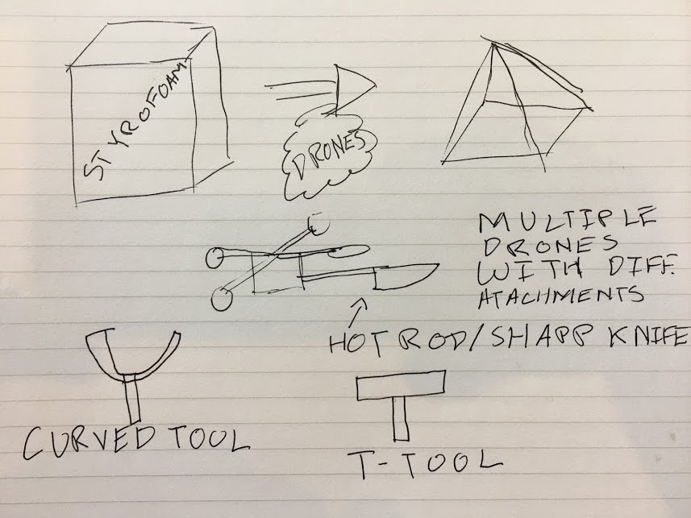
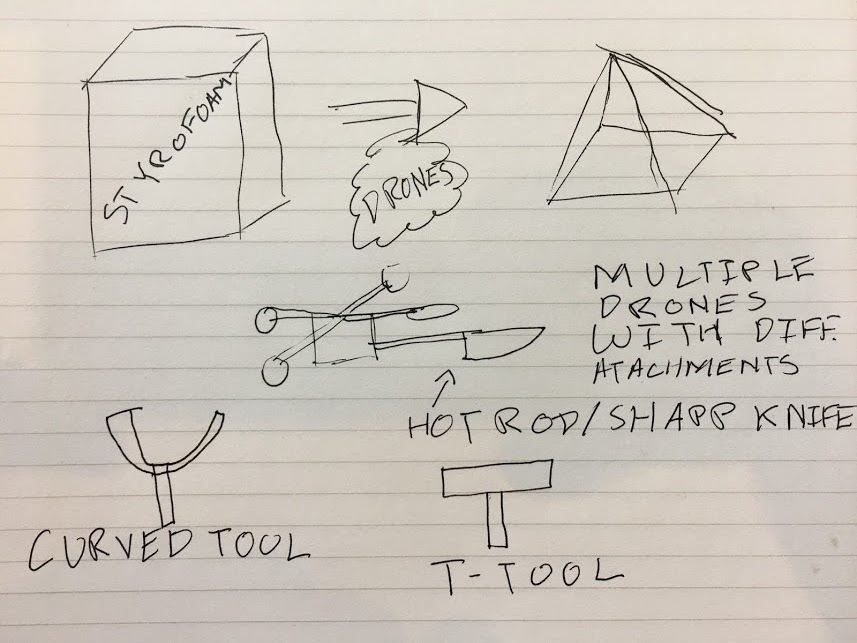

Project Name: TBD
Team Members: Eswar Anandapadmanaban, Aaron Wubshet, Lokhin Cheng
IDEA 1: Interactive DJ Stand
Touch screen DJ stand with AR DJ headset + gesture recognition
Genre, volume, tempo input from crowd

IDEA 2: Ultrasonic Haptic Feedback
Ultrasonic haptic feedback
Make haptic holograms
IDEA 3: Interactive circuit simulation table
Interactive table for UI with spice as a backend
Place circuit components on table arranged in desired configuration, feed orientation and type of components into Spice for analysis, output result

IDEA 4: Projection based smart watch
Wearable watch/bracelet with projector on to arm with tablet/smartphone capabilities

IDEA 5: Sculpting Drones
Multiple small drones in pairs connected with hot rod wires (w/ current running through)
Hand gestures to create a shape, carve a block of sytrofoam
 

Final Decision
Drone based Mixed Reality
Our final project will be a system to use drones to form the bridge in a physical
to digital to physical transfer of information. This will come in one of two forms:
1) a pico projector(or other audio/visual output device) mounted to a drone that would
enhance a user's exerpience with every day tasks(checking the weather, watching a movie, simulating a ciruit, etc)
2) a drawing utensil(paint brush or otherwise) mounted to a drone to product the input
gestures as an artistic output.
The project will utilize
1) Laser cutting/3D printing via printing a drone encasing, tools to be mounted, and
possibly a wireless charging dock for the drone
2) Custom electronics via a projector/speaker/LEDs mounted on the drone to provide
some sort of feedback to the user as well as modifying or adding to the prebuilt
electronics of the drone itself
3) The media being output by the drone(visual or audio) will be transfered by wifi
along with any user inputs to the drone
4) User selects a type of media to be displayed via AR application/gesture recognition
and the drone responds by producing the apprioriate type of media
5) Personal assistant drones could vastly simplify our lives by creating an interface
for everyday objects(displaying the weahter on your dresser via a projector,
outputting your painting on an easel across the room)
Our final demo will be a drone following around a user producing some sort of media
in response to user inputs.
Weekly Progress Log
Week #1: Sept. 18 - 24
Week #2: Sept. 25 - Oct. 1
Week #3: Oct. 2 - 8
Week #4: Oct. 9 - 15
Week #5: Oct. 16 - 22
Week #6: Oct. 23 - 29
Week #7: Oct. 30 - Nov. 5
Week #8: Nov. 6 - 12
Week #9: Nov. 13 - 19
Week #10: Nov. 20 - 26
Week #11: Nov. 27 - Dec. 3
Week #12: Dec. 4 - Dec. 10
Week #13: Dec. 11 - Dec. 17